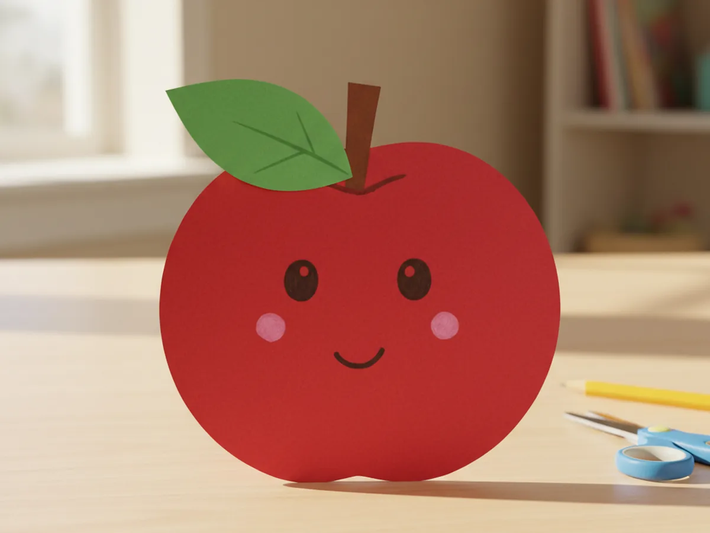
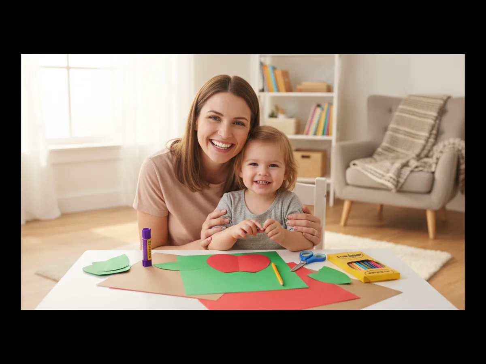
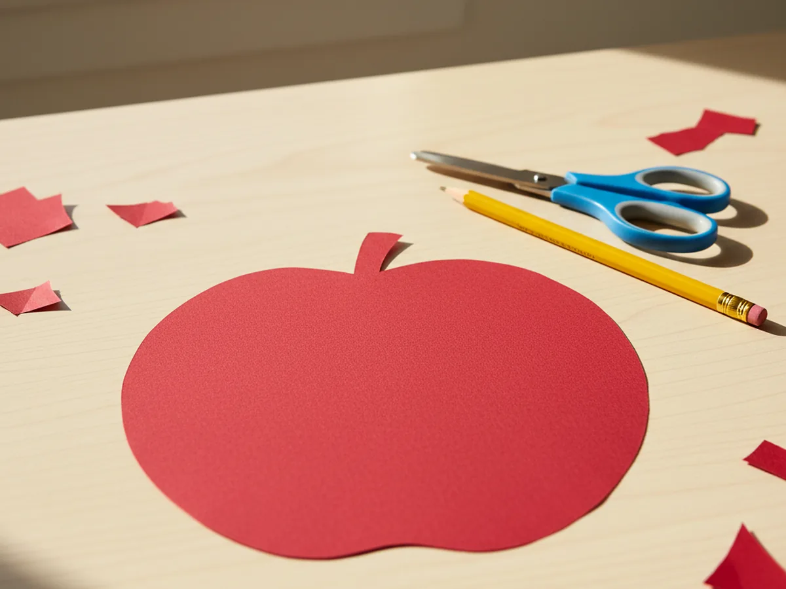
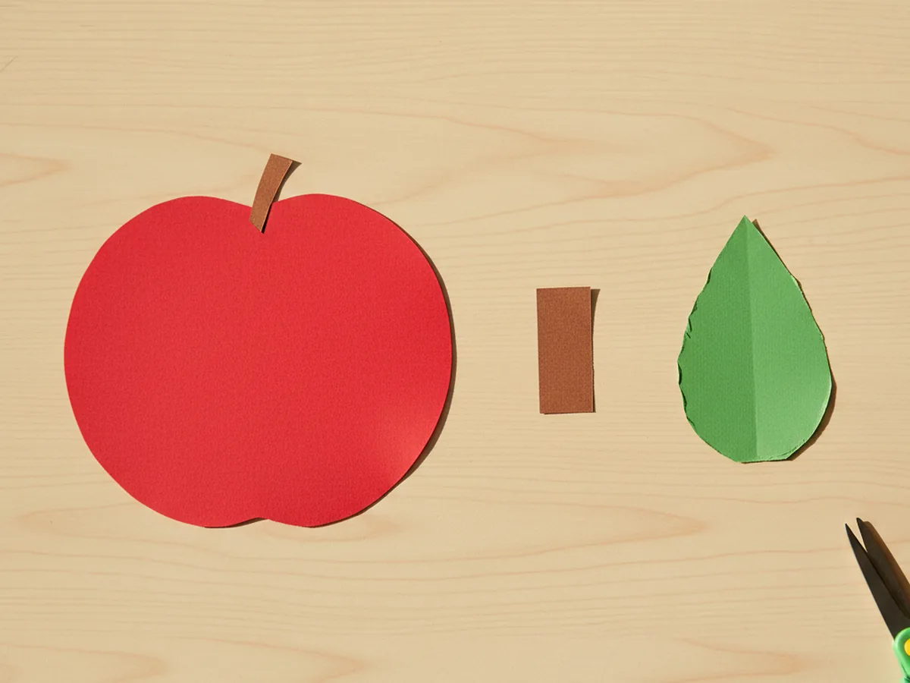
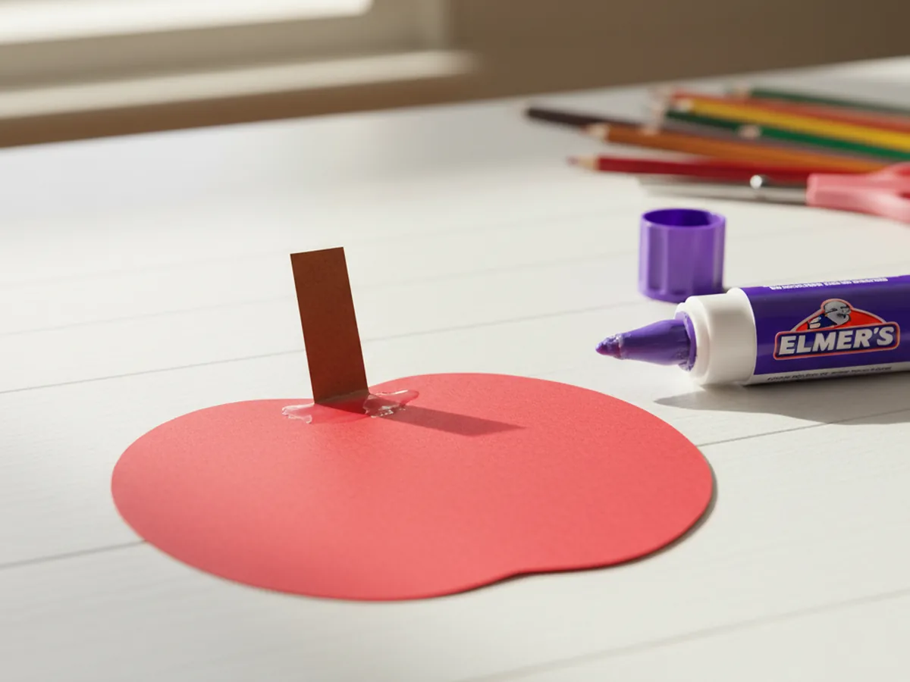
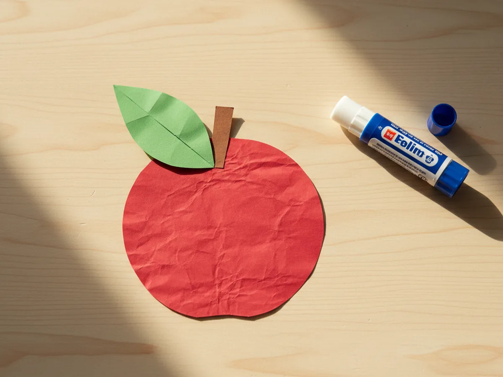
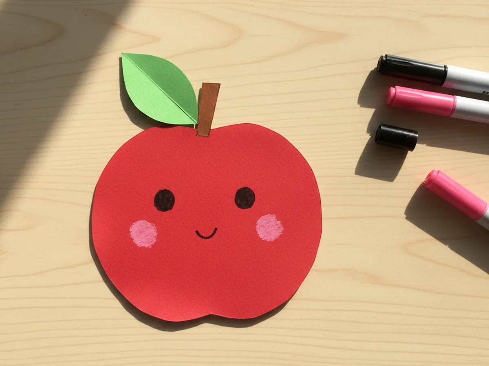
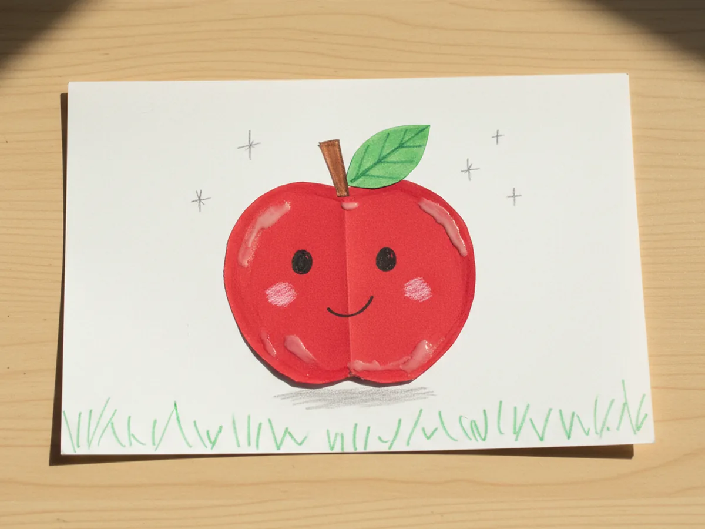

Few things feel as instantly cheerful as a bright red apple sitting on the kitchen table. This easy paper fruit craft turns that sweet little image into a craft your child can actually make in about twenty-five minutes, and it all comes together with shapes so simple that even a three year old can follow along. A round red body, a green leaf, a tiny brown stem, and suddenly there is a smiling apple grinning back at you. 🍎
What I love most about this simple paper fruit craft is how forgiving it is. Wonky lines look adorable, slightly crooked stems just add personality, and a slightly lopsided leaf only makes the apple look more handmade. It is a calm, low-mess project that gives a quick visible win, which is exactly the kind of activity that makes a craft session feel like a real shared moment instead of a stressful one.
Why Kids Love This Craft
Children adore this easy paper fruit craft because the apple appears so quickly under their fingers. The body is one big round shape, and as soon as it is cut out, you already see the apple. That fast visible progress is huge for young kids who can lose patience with anything that takes too long to come together.
This paper apple craft also gives wonderful fine motor practice without feeling like work. Cutting a curved circle teaches your child to slowly turn the paper while snipping. Pinching the small stem and pressing the leaf into the right spot strengthens the same little fingers they will use for buttons, pencils, and shoelaces later on. It is one of those gentle activities that quietly builds skills while everyone is just having fun together.
The best part comes at the end, when your child draws on a face. Adding two tiny eyes and a smile turns the apple from a piece of fruit into a friendly little character. Suddenly your little one is naming their cute paper fruit craft, walking it across the table, and giving it a whole personality. That sweet bit of pretend play is exactly what makes this kind of craft feel so warm and worthwhile. 💛

What You'll Need
Here is everything you need for this easy paper fruit craft. I always set the supplies out first so my little one can sit down and dive straight in without any waiting.
- Crayola Construction Paper (240 sheets, 12 colors), the perfect set for a red apple body, green leaf, and tiny brown stem.
- Elmer's Disappearing Purple Glue Sticks (30 pack), washable and easy for tiny fingers to twist up and apply.
- Fiskars 5 inch Blunt Tip Kids Scissors, the right safe size for cutting the gentle curves of this craft.
- Crayola Broad Line Markers (10 classic colors), perfect for drawing the apple's sweet little face and tiny details.
- A pencil for sketching shape outlines and a piece of white cardstock or paper to display the finished apple.
Step-by-Step Instructions
This easy paper fruit craft walks through six gentle steps that flow naturally from cutting to gluing to adding a sweet face. Take your time and let your child do as much as they can comfortably handle.
Step 1: Cut the Apple Body Shape
Start by lightly sketching a rounded apple shape on red construction paper, about the size of your child's open hand. The shape is mostly a circle, but with a small dip at the very top where the stem will sit. Cut it out carefully using kid scissors. Soft, slightly uneven edges are completely fine and actually make the apple look more handmade and charming.

Step 2: Cut the Stem and Leaf
From a small piece of brown construction paper, cut a tiny rectangle about the size of a postage stamp for the apple stem. Then cut a teardrop or pointed oval shape from green construction paper for the leaf, roughly the same length as the stem but a bit wider. Lay all three pieces side by side so your little one can already picture the apple coming together.

Step 3: Glue the Stem on Top
Pick up the brown rectangle and add a small swipe of glue to the back. Press it into the little dip at the top center of the red apple body, letting about half of the stem peek up above the apple while the other half tucks behind. That little overlap is what makes the stem look like it really belongs to the apple instead of floating above it.

Step 4: Add the Leaf
Take the green teardrop leaf and add a small dab of glue to the back of the wide end. Press the leaf gently against the side of the brown stem so it angles outward, like a real leaf reaching up toward the sun. Then fold a soft crease down the center of the leaf with your fingertip. That little crease gives the leaf a natural folded shape and makes the whole apple feel more dimensional.

Step 5: Draw a Sweet Face
Now for the most fun part: giving the apple a personality. Use a black marker to draw two small round eyes in the upper third of the apple body, then add a tiny curved smile just below them. Finish with two soft pink cheek dots using a pink marker, drawn lightly so they look like a little blush. This is where most kids gasp a bit, because the apple suddenly turns into a real friend. 🥰

Step 6: Mount and Finish the Scene
Glue the finished paper apple onto a piece of white cardstock or another sheet of paper as a clean background. Add a few tiny details around it: small white sparkle dots with a marker, a soft shadow line under the apple, or a few green grass blades along the bottom edge. These tiny touches make the easy paper fruit craft look complete and ready to display proudly on the fridge. ✨

Variations to Try
Paper Fruit Basket: Make several of these little fruits using the same simple shape method, like a yellow banana, an orange round orange, and a red strawberry. Glue them all into a brown paper basket cut from cardstock for a sweet group paper fruit craft scene that feels like a tiny still life painting.
Tissue Paper Texture Apple: Instead of plain red construction paper, let your child glue torn pieces of red tissue paper onto a paper plate apple shape for a soft layered texture. This turns the same craft into a cozy sensory project that toddlers especially love.
Alphabet or Counting Apple: Write a letter, number, or simple word on each apple to turn the craft into a gentle learning activity. Make a tree branch from brown paper, glue the apples on, and you have a cheerful learning display for the wall, perfect for an early learning at home moment.
Final Thoughts
This easy paper fruit craft is one of those simple little projects that asks for almost nothing in supplies and gives back the biggest happy smile from your child. The cutting, gluing, and face-drawing all unfold at a calm pace, which makes it a wonderful weekend morning activity, a quiet rainy-day project, or a sweet way to slow down together after a busy day. Whatever you do with the finished apple, your child will remember the moment you made it side by side.
If your little one finishes their first paper apple, save this article on Pinterest so other craft-loving mamas can find it easily. Happy crafting! 🌼
More Crafts You'll Love
If your child loved this easy paper fruit craft, they will adore these other sweet and simple projects too: